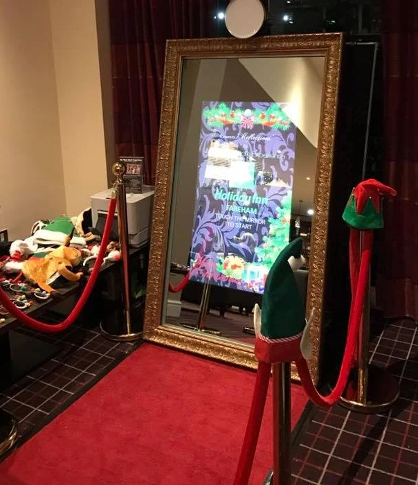
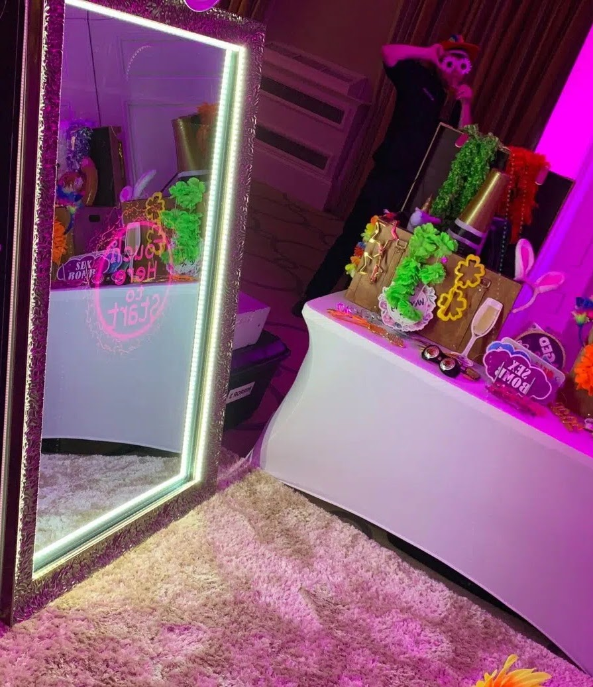

Oglinda care păstrează momente magice✨
Oglinda Magică capturează cele mai frumoase amintiri și le printează pe loc pentru fiecare invitat. Folosim hârtie și printere profesionale, astfel că pozele nu se vor decolora in timp. Oferim doar pachete complete ce includ poze nelimitate, carte de amintiri, operator, decoruri și accesorii.
Descoperă mai multe informații!

